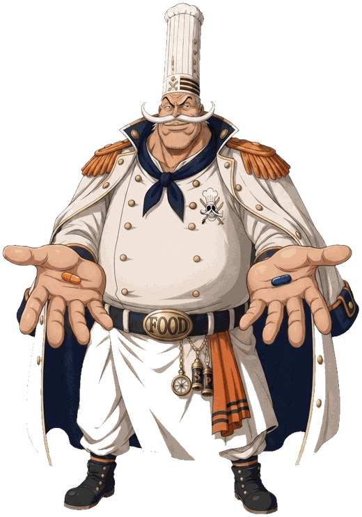
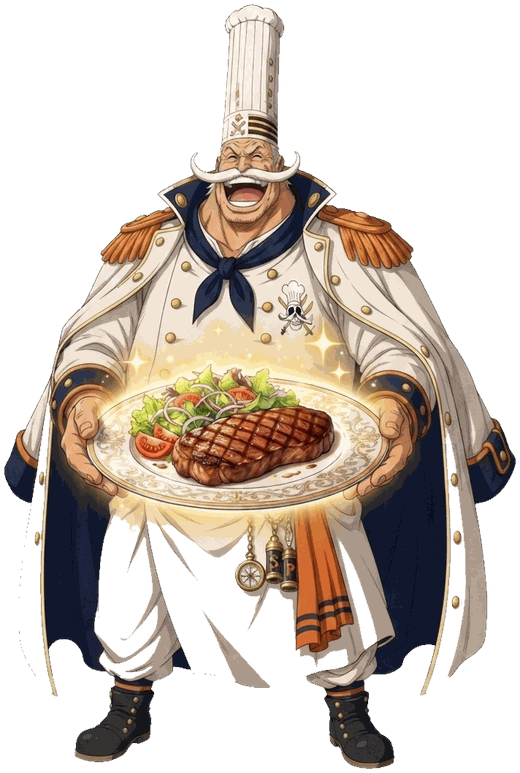
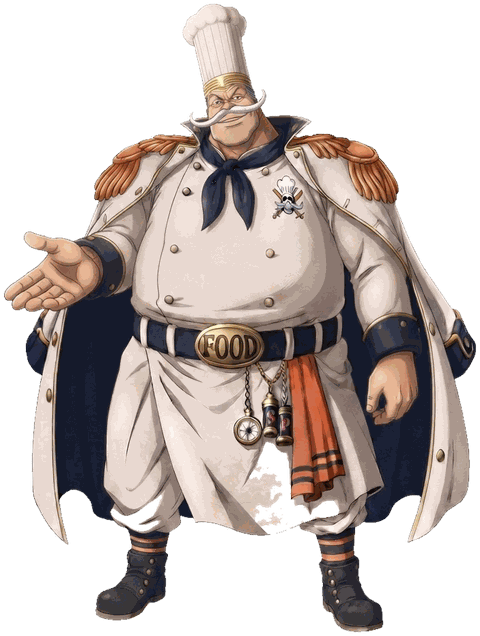

La commission ronge ta marge.
Une grosse part de chaque commande part à la plateforme. Sur un métier où la marge se joue à quelques points, ça change tout.
Cap sur Tours — pour les indépendants
0 commission, tes plats à tes prix, tes clients : Captain.Food te rend ce que les grandes plateformes t'ont pris.
Une plateforme de commande locale, entreprise solidaire d'utilité sociale (ESUS) — pensée pour les restaurants et food trucks indépendants, à Tours.
Gratuit, sans exclusivité. Tu gardes tes plateformes actuelles — Captain.Food vient en plus, pas à la place.

Là où part ton argent
Sur les grandes plateformes, chaque commande te coûte plus cher que tu ne le crois.
Une grosse part de chaque commande part à la plateforme. Sur un métier où la marge se joue à quelques points, ça change tout.
La plateforme connaît leur nom, leur adresse, leurs habitudes. Toi, non. Le jour où tu la quittes, tu repars de zéro.
Pour absorber la commission, tu gonfles tes tarifs en ligne : deux cartes, deux prix, un client qui ne comprend pas.
La commission monte ? Tu l'apprends. Ton classement baisse ? Tu ne sais pas pourquoi. Les règles changent ? Tu suis.
« Je m'en moque, je répercute la commission sur mes prix. »
C'est ce que beaucoup se disent. Mais tes prix gonflent, le client commande moins — ou ailleurs. Ces commandes perdues, tu ne les vois jamais.
Répercuter la commission, ce n'est pas l'annuler. C'est la faire payer à ton chiffre d'affaires.
Et si tu la répercutes ? Regarde :
Tes prix en ligne gonflent nettement. Le client compare, te trouve plus cher, et commande moins — ou ailleurs. Ta marge est sauve sur le papier, mais les ventes perdues, tu ne les vois jamais.
Tu perds sur les deux tableaux : tes prix montent quand même (donc du volume en moins), et tu absorbes l'autre moitié (donc de la marge en moins).
La commission ? On la met à terre.
0 % sur tes plats, toujours. Ta marge reste dans ta poche — pas dans celle d'une plateforme.
Le calcul, pour toi
Deux chiffres suffisent. Tu vois tout de suite ce que les commissions prélèvent sur ton affaire — chaque mois, chaque année.
Ce que la commission te prend :
« 0 € pour moi, où est le loup ? » Il n'y en a pas : c'est le client qui contribue, pas toi. Comment on se finance, en clair →
Estimation à titre indicatif, à partir d'un taux de commission que tu peux ajuster. Chaque plateforme et chaque contrat diffèrent : c'est un ordre de grandeur, pas un relevé.
Deux logiques, un choix
D'un côté, la commission qui te ronge. De l'autre, 0 % et le contrôle de ton affaire. À toi de choisir ta voie.

| Critère | Plateforme à commission | Captain.Food |
|---|---|---|
| Commission sur tes plats | 25 à 35 % par commande | 0 % |
| Tes prix | Gonflés pour absorber la commission | Les mêmes qu'en salle |
| Ta clientèle | Confisquée : tu ne sais pas qui commande | À toi, dès la première commande directe |
| Ton canal | Le leur, tu suis leurs règles | Le tien, sous ton nom |
| Les règles du jeu | Elles changent, tu l'apprends | Fixées par un statut solidaire (ESUS) |
Comparaison des modèles économiques, pas d'un acteur en particulier.
Ton pavillon, tes règles
Captain.Food est une plateforme de commande en ligne locale qui te redonne le contrôle. En ligne et à table, sous ton nom.

Tu gardes 100 % du prix de ce que tu vends. Toujours.
Pas une fiche noyée dans l'annuaire d'un autre : un vrai site de
commande à toi, tonresto.captain.food, ta vitrine en
ligne. Inclus. (Ton propre domaine tonresto.fr ? On te
le met en place, en option.)
Dès la première commande en direct, tu accèdes à ta base clients — pour les fidéliser et les faire revenir. C'est à toi.
Les mêmes prix qu'en salle. Rien à gonfler, rien à cacher.
Question légitime — et voici la réponse, en clair.
D'abord l'essentiel : toi, restaurateur, tu ne paies jamais de commission sur tes plats — 0 €, dans tous les cas. Le service n'est pas financé sur ton dos.
Il est financé par une contribution du client en prix libre, ajoutée à sa commande : chacun donne ce qu'il veut pour faire vivre une alternative juste. Un pari — celui que des clients informés préfèrent soutenir leur commerce local plutôt qu'une multinationale.
Et si ça ne suffit pas à couvrir nos frais, un petit montant fixe prend le relais — à la charge du client, juste de quoi couvrir les frais de transaction. Jamais un pourcentage sur tes plats, jamais de commission.
Reste un vrai coût, qu'on ne cache pas : la livraison — payer dignement la personne qui l'apporte. Tu y participes seulement sur tes commandes livrées, à hauteur de ce que ta marge permet (tu fixes ton plancher, on ne descend jamais dessous), et le client paie la différence, en clair. Comment on paie la livraison →
Exemple illustratif — une commande de 30 €
Le client ne souhaite pas contribuer ? Un petit forfait fixe — de l'ordre de 0,70 € (exemple), à sa charge — couvre juste les frais de transaction. Toi, tu touches tes 30 €, dans tous les cas.
Sur une plateforme à ~30 % de commission, il ne te resterait qu'environ 21 € sur la même commande.
S'il s'agit d'une commande livrée, un coût de service s'ajoute pour payer le livreur dignement — partagé avec le client et plafonné par la marge que tu fixes, jamais une commission. Voir comment on paie la livraison →
Montants donnés à titre d'exemple pour illustrer le principe, pas une grille tarifaire.
Ton site Captain.Food, c'est ta base. De là, tu encaisses des commandes de trois manières — toutes sans commission sur tes plats.
Tes clients commandent en ligne sur ton site, à ton nom. Pas d'intermédiaire qui se sert au passage.
Le client commande à l'avance et récupère sur place. Simple, direct, sans matériel en plus.
Le client scanne, commande depuis sa place. La commande part en cuisine, et le paiement reste dans ta caisse habituelle — on ne touche pas à ton encaissement. C'est inclus, sans commission.
Un outil pour tout ton service, au lieu d'un canal de plus à gérer.
Un cap qui ne dérive pas
Captain.Food part d'une conviction simple : le numérique doit être un outil d'utilité publique, pas un péage aux mains de quelques géants de la tech. Le problème n'est pas qu'ils gagnent de l'argent — c'est qu'une fois que tu en dépends, ils peuvent presser, et rien ne les en empêche.
Alors on se donne des garde-fous qui tiennent. Captain.Food est une entreprise solidaire d'utilité sociale (ESUS) — un cadre juridique qui encadre notre lucrativité et notre raison d'être — avec pour cap une coopérative (SCIC), où restaurateurs, livreurs et citoyens auront voix au chapitre. Par construction, on ne pourra pas devenir ce qu'on combat.
Et pour que tu n'aies pas à nous croire sur parole : on ouvre nos comptes en public sur Open Collective — chaque euro reçu et dépensé, destiné à être visible par tous. La transparence radicale, pas le slogan.
Notre horizon : que Captain.Food soit un bien commun numérique, pas un actif privé. On vise à ouvrir le code (open source) et à le faire reconnaître comme bien public numérique (digital public good) — pour qu'il soit vérifiable, et surtout réplicable : d'autres villes, d'autres coopératives pourront le reprendre. Un outil d'intérêt général, ça se partage — ça ne se revend pas. Lire le manifeste →
qui en ont assez de travailler pour la commission des autres.
qui veulent un canal de commande simple, à leur nom, sans matériel lourd.
attachés à leur quartier, à leurs habitués, à leur métier.
Si tu es une grande enseigne à la recherche du plus gros volume au moindre coût, on n'est probablement pas faits pour toi. Si tu veux reprendre la main sur ton affaire, embarque.
Port d'attache
Captain.Food démarre ici, à Tours, avec un premier groupe de restaurateurs. Pas partout, pas tout de suite : un territoire, bien fait, entre indépendants qui se connaissent.
On construit la plateforme avec les premiers restaurants qui embarquent — leurs retours façonnent l'outil. Rejoindre maintenant, c'est peser sur ce que Captain.Food deviendra.
Moins que tu ne crois.
Laisse-nous ton contact : on te recontacte pour te présenter Captain.Food, sans engagement.
Bien reçu ⚓ Bienvenue à bord !
On te recontacte très vite. Envie d'échanger tout de suite ?
Ou écris-nous à miam@captain.food.
Tout ce que les restaurateurs nous demandent — en clair, sans détour.

Oui. 0 % de commission sur tes plats, inscription gratuite. Le service est financé par une contribution libre des clients, pas par toi.
Par une contribution libre du client, ajoutée à sa commande, en toute transparence. Si ça ne suffit pas, un petit montant fixe — à la charge du client, jamais un pourcentage — prend le relais pour couvrir les frais de transaction. Toi, tu ne paies pas de commission : 0 €, dans tous les cas. Voir le détail complet, exemple à l'appui.
La livraison a un vrai coût : payer correctement le livreur (on vise au moins 7 € la course). Tu y participes uniquement sur tes commandes livrées, à hauteur de ce que ta marge permet — tu fixes ton plancher, on ne descend jamais dessous. Le client paie la différence, en transparence. Jamais une commission sur tes plats. Voir le calcul en détail, exemple à l'appui.
Non. Captain.Food vient en plus, sans exclusivité. Beaucoup de restaurants gardent les deux et voient Captain.Food comme leur canal direct, celui qu'ils maîtrisent.
Parce que ça ne te coûte rien et que tu n'as aucune exclusivité à donner. Tu es référencé, tu récupères ta base clients dès tes premières commandes directes, et tu façonnes l'outil pendant qu'on démarre. Les premiers embarqués sont ceux qui pèsent le plus.
Chaque commande passée en direct sur ta page t'appartient : tu accèdes aux coordonnées de tes clients (avec leur consentement) pour les fidéliser toi-même. Contrairement aux grandes plateformes, on ne confisque pas ta clientèle.
« Entreprise solidaire d'utilité sociale » : un agrément qui encadre juridiquement notre lucrativité et impose une finalité sociale. En clair, une garantie que Captain.Food ne pourra pas dériver vers ce qu'on dénonce.
Tu peux aussi prendre les commandes à table via Captain.Food, sous ton nom. Le paiement reste dans ton système habituel — on ne s'insère pas dans ta caisse.